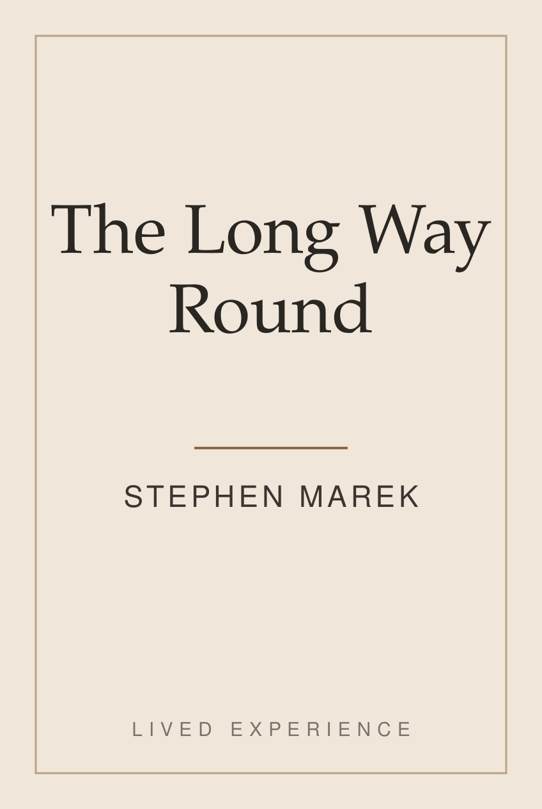
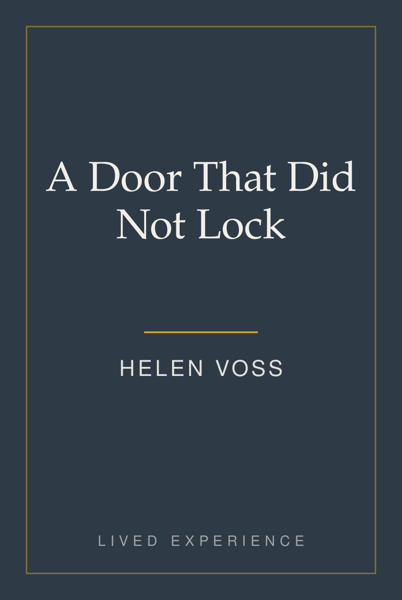
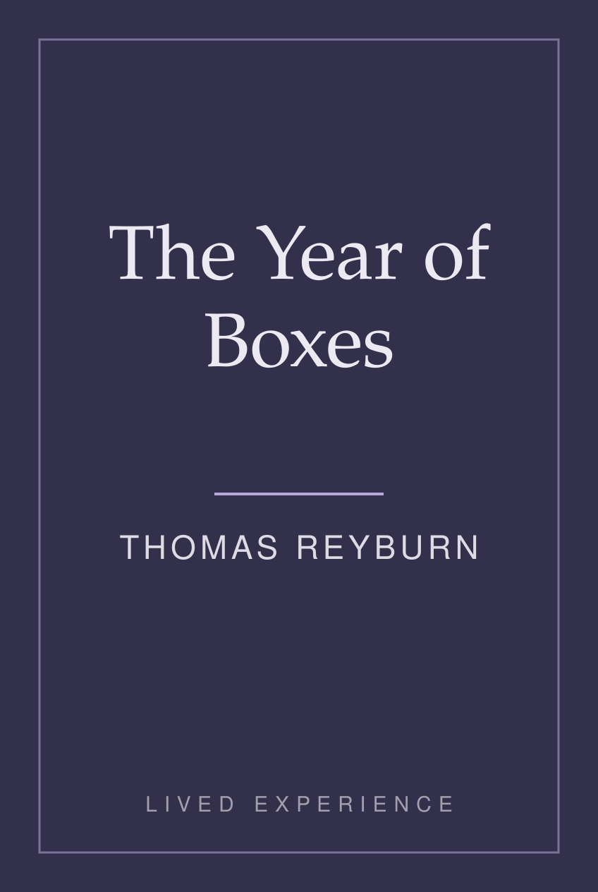
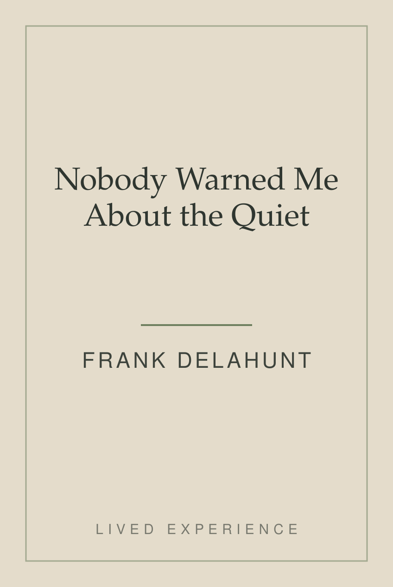

Not a ranking proposal. This result order is invented. Only the collection’s presence is what we are asking for.
1-16 of over 800 results for “memoir about leaving home”
Sort by: Featured
What this page does not change: the order of these results. Nothing here is re-ranked, promoted, or filtered — we added no refinement to the left rail and no sort option — and the two collection titles below carry only the same “Part of:” line Amazon already prints for a book in a series, plus one line the author wrote.
-
Sponsored
The House on Winter Street
by Anne Prescott★★★★☆(12,480)Kindle Edition$9.99 -
Salt and Distance
by Michael Brandt★★★★☆(3,109)Kindle Edition$12.99 -
Everything I Left Behind
by Carol Whitfield★★★★☆(87)Kindle Edition$0.00 kindleunlimited -
Departures: A Memoir
by Paul Ashby★★★★☆(1,204)Kindle Edition$6.99 -
Sixty Miles from Anywhere
by Janet Kroll★★★★☆(640)Kindle Edition$4.99 -
The Road from Manila
by Rosa DelgadoPart of: Lived Experience★★★★☆(214)Kindle Edition$0.00 kindleunlimited"I left Manila in 1979. I wrote this in Tagalog first, because that is the language I remember it in." -

The Long Way Round
by Stephen Marek★★★★☆(58)Kindle Edition$11.99 -

A Door That Did Not Lock
by Helen Voss★★★★☆(4,730)Kindle Edition$2.99 -
Sponsored
After the Move
by Gregory Lyle★★★★☆(909)Kindle Edition$8.99 -
What the Suitcase Held
by Barbara Nell★★★★☆(176)Kindle Edition$0.00 kindleunlimited -
Eleven Addresses
by Terrance BoydPart of: Lived Experience★★★★☆(438)Kindle Edition$0.00 kindleunlimited"Eleven places in six years after I got out. I wrote most of this on a library computer, an hour at a time." -
Homesick for a Place That Changed
by Diane Cutler★★★★☆(2,015)Kindle Edition$7.99 -

The Year of Boxes
by Thomas Reyburn★★★★☆(31)Kindle Edition$3.99 -
Leaving: A Memoir in Essays
by Ruth Almond★★★★☆(762)Kindle Edition$10.99 -

Nobody Warned Me About the Quiet
by Frank Delahunt★★★★☆(5,388)Kindle Edition$0.00 kindleunlimited -
The Country I Remember
by Marjorie Stane★★★★☆(143)Kindle Edition$5.99